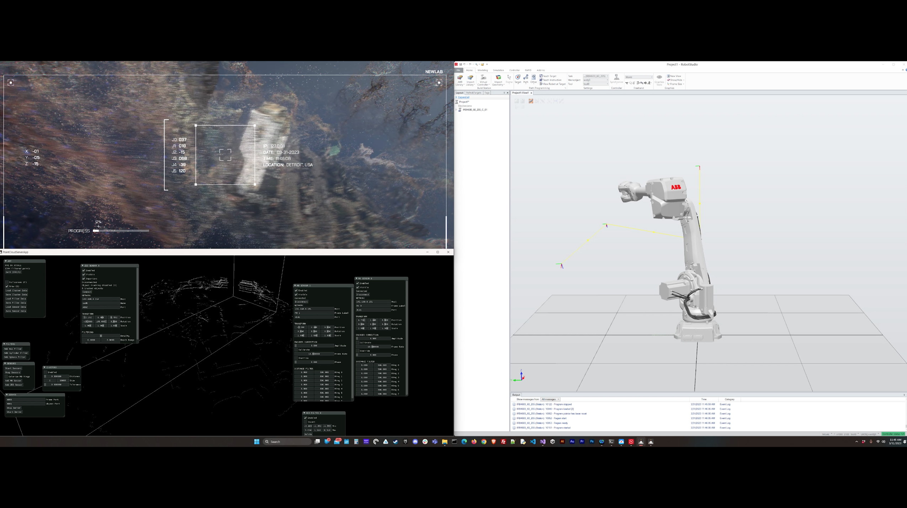
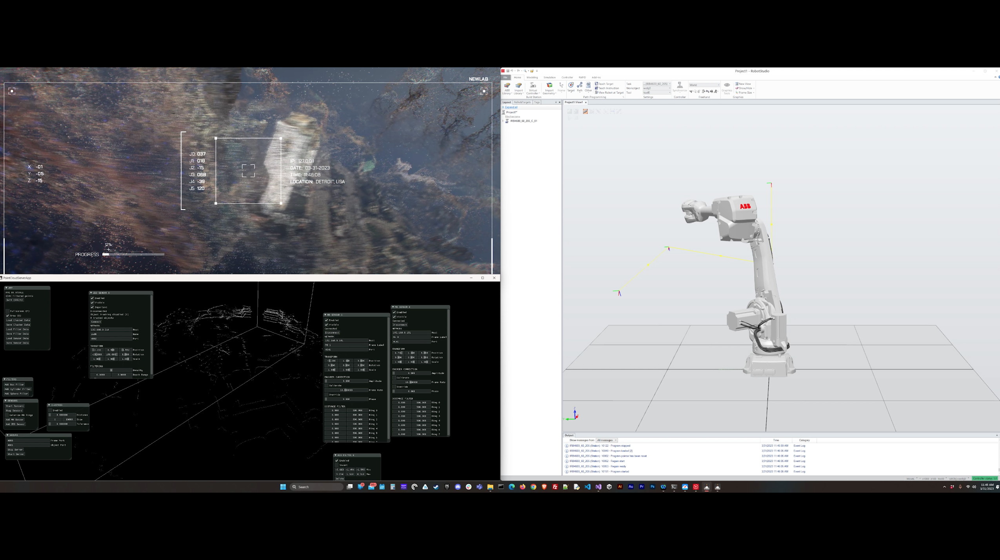

human meet machine // Newlab x NBRR
A robotics driven realtime mixed-reality project in collaboration with Newlab and NBRR in Detroit that explores the future of humankind's intertwined creative relationship with technology.
Features an autonomous robot driven enviroment with an exploration of a geo-spatial visualization of dense photogrammetry of the city of Detroit, driven by a user input sensor grid, streaming data into a realtime endlessly unique angle of a robot and human collaborative guided creation.
The interaction system responds to visitors presence and movement through space. As visitors approach, the robot peers around to acknowledge their presence and bring them into the experience. The more users engage, the deeper the robot explores the hybrid virtual-physical space it inhabits.
Role: Producer // Studio: dotdotdash
Location: Detroit (MI), USA
Socials